一、登录与注册
进入系统后首先进入的是登录界面，输入账号密码登录系统。
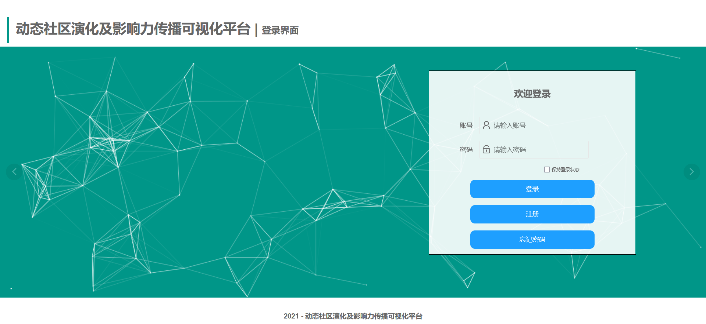
如果用户没有账号，可点击注册按钮进行注册，进入注册页面后，按照提示输入信息点击按钮即可注册。
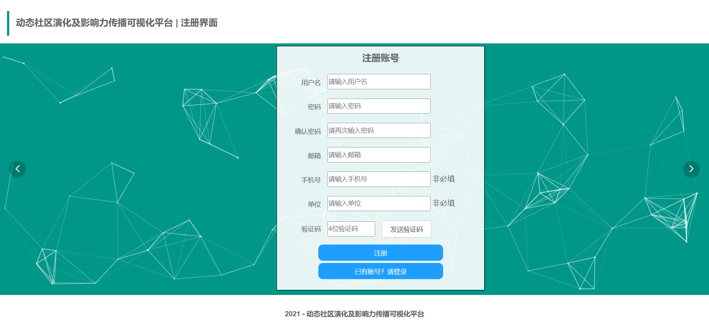
如果用户忘记密码，可点击忘记密码按钮，输入账号和邮箱验证身份，点击下一步，进入修改密码界面。
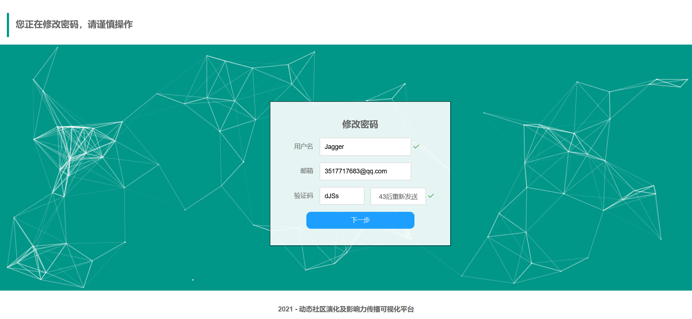
进入修改密码界面后，输入新密码以及确认密码，点击完成按钮，即可进行密码修改，修改成功后会跳转至登录界面。
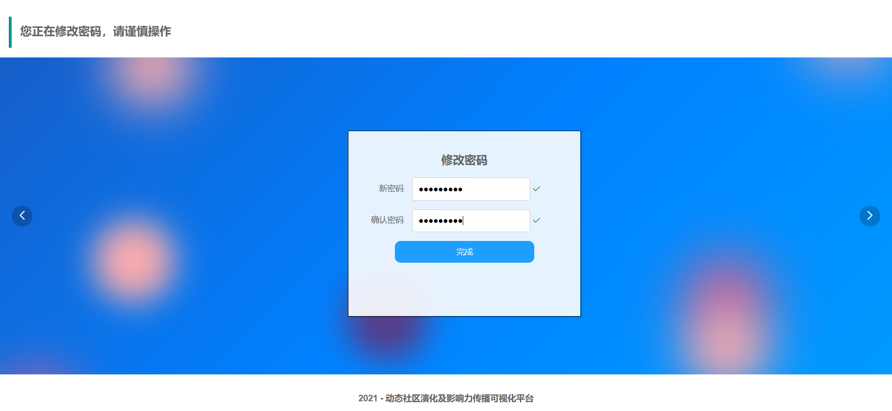
二、主界面
成功登陆后即可进入系统主界面，通过平台主界面左侧所列的功能模块导航按钮可进入各功能模块。
点击上面导航中的使用说明按钮，将进入使用说明界面，介绍了该平台各模块使用方法；
点击上面导航中的关于我们界面按钮，将进入到介绍我们团队成员工作等信息的界面；
点击右上侧的用户按钮，可以查看相关的用户信息；
点击注销账户按钮，用户可以进行账号注销，并跳转到登录页面；点击退出按钮可以退出并跳转到登录界面。
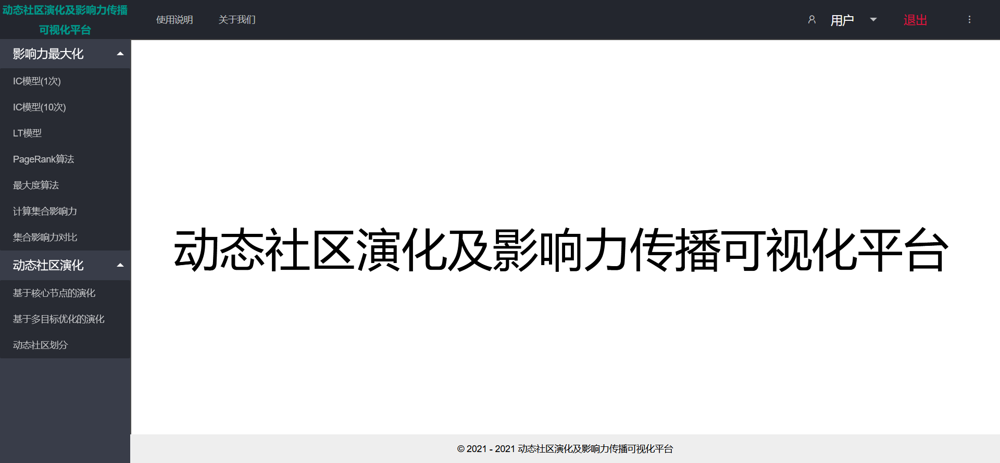
三、影响力传播模块
点击左侧导航“影响力最大化”按钮进入影响力传播模块，该模块主要是对常见的影响力传播算法进行了可视化，同时加入了“计算集合影响力”和“集合影响力对比”两个模块，点击相应按钮进入相应的模块。以下是各模块的展示：
1.IC模型
点击左侧导航进入该模块后自动展示当前网络图中各个节点在IC模型下的影响力传播过程，即节点能激活哪些节点。如下图所示：
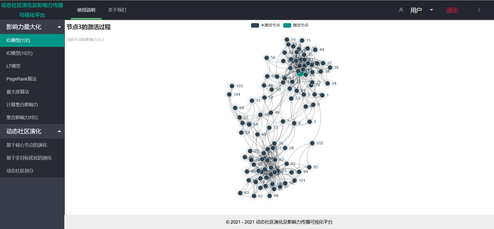
当所有节点的激活过程都展示完毕之后将突出显示在本次模拟中影响力最大的节点和其激活的节点，以及该节点的影响力的大小，如下图所示：
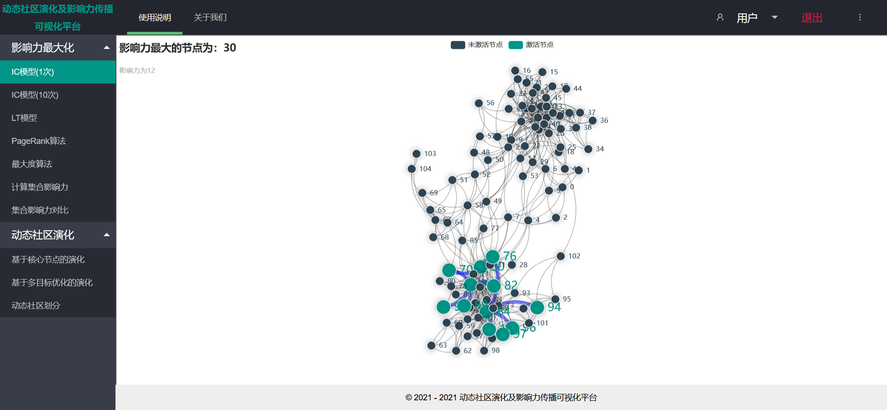
2.IC模型(10次)
点击左侧导航进入该模块后自动展示当前网络图中各个节点在IC模型下模拟10次的影响力传播过程。如下图所示：
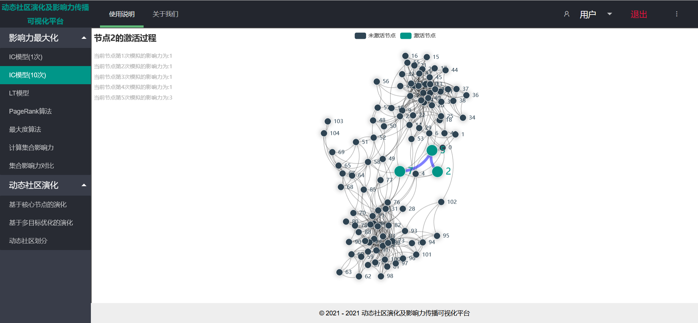
当所有节点的激活过程都展示完毕时，将显示在10次模拟后网络中影响力最大的节点及该节点10次模拟的平均影响力，如下图所示：
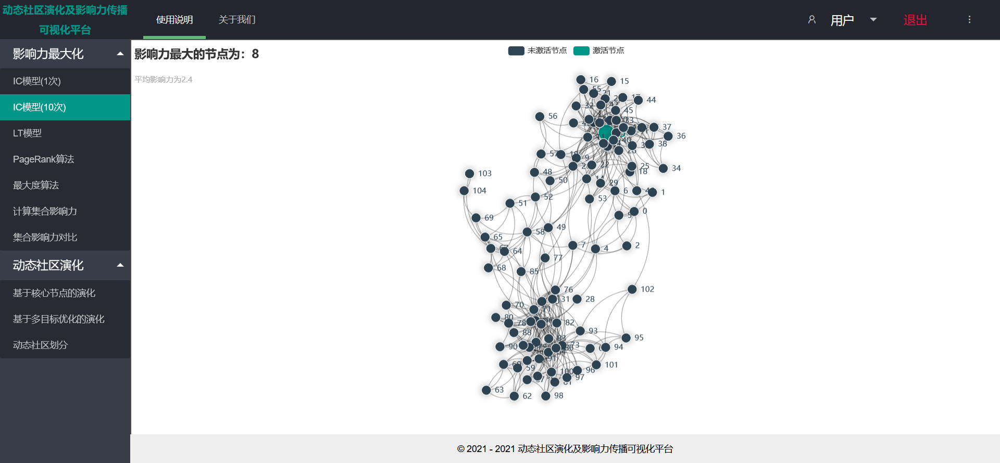
3.LT模型
点击左侧导航进入该模块后自动展示当前社交网络图中各个节点在LT模型下的影响力传播过程，也即节点能激活哪些节点,我们对于每个节点模拟10次，如下图所示。：
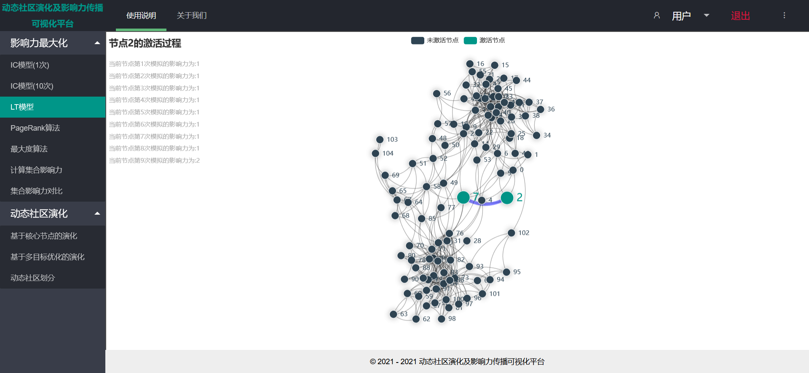
当所有节点的激活过程都展示完毕时，将显示在10次模拟后网络中影响力最大的节点及该节点10次模拟的平均影响力，如下图所示：
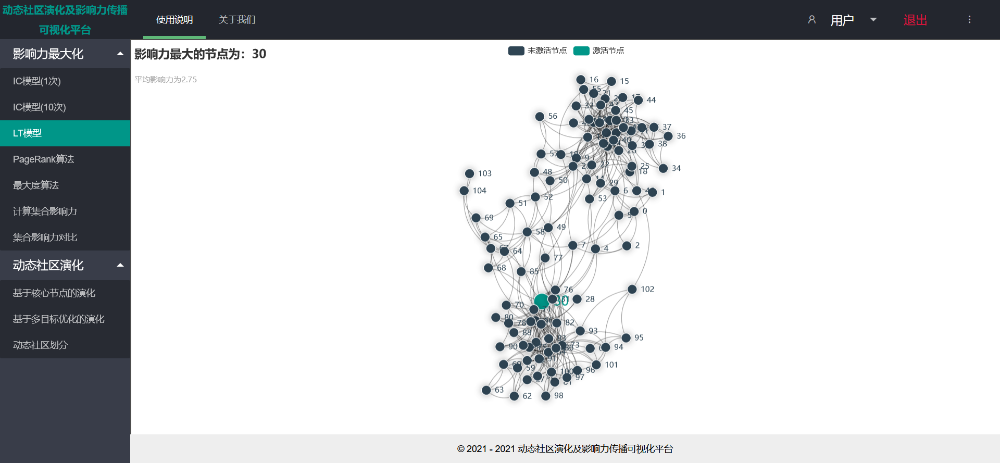
4.PageRank算法
点击左侧导航中的PageRank算法，进入该模块后自动展示当前网络图中每个节点在PageRank算法下的影响力计算过程，最终显示所有节点中PageRank值最大的一个节点。如下图所示：
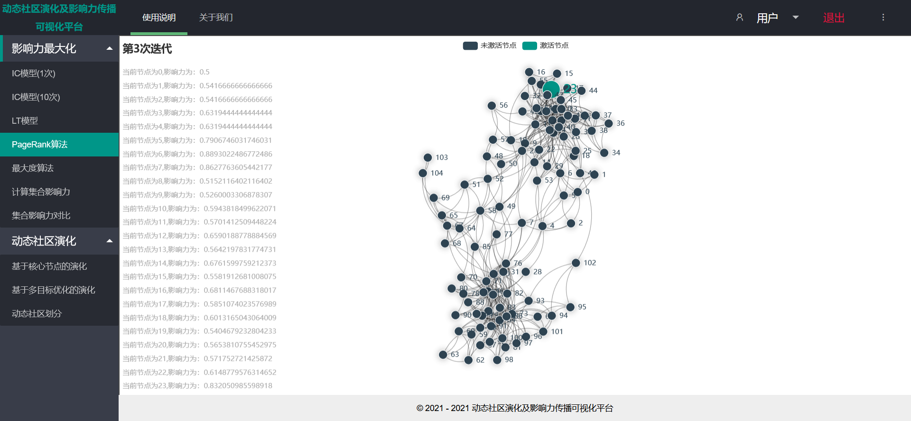
当展示的计算过程结束时，该页面会展示出在PageRank算法下影响力最大的一个节点，同时在网络图中的左侧会显示出PageRank算法在当前网络中迭代的次数，也会显示出影响力最大的节点以及节点的影响力大小，如下图所示：
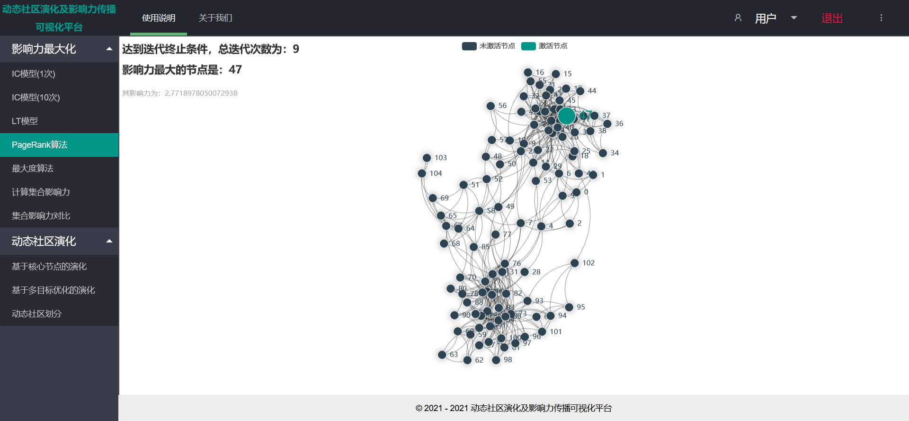
5.最大度算法
点击左侧导航进入该模块，该页面从编号为0的节点开始，依次展示每个节点可以激活的节点，也就是当前节点的邻居节点。当所有节点的激活过程都展示完毕之后将显示在本次模拟中影响力最大的节点及其激活的节点和影响力的大小。如下图所示：
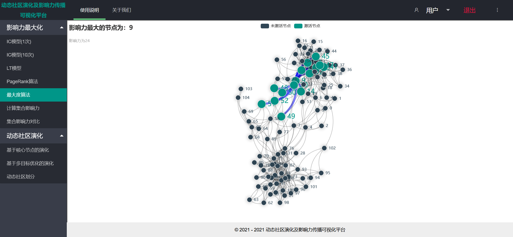
6.计算集合影响力
点击左侧导航计算集合影响力，进入该模块后页面将显示一个网络图，以及两个输入框，分别为输入节点和输入节点权重设置输入框。采用相应模型计算节点集合影响力，页面将计算出输入集合的所有节点影响力之和显示出来，同时显示节点集合各个节点的传播过程。
首先输入节点集合，可以输入一个节点，也可以输入多个节点，节点之间用逗号隔开，然后输入边权重设置方法，有三种边权重设置选择，第一种是每条边的权重随机的从[0.1,0.01,0.001]中选择一个，第二种是每条边的权重固定为0.1，第三种是边的权重等于节点的入度分之一，从1,2,3中选择一个数字输入，分别代表这三种设置方式。节点集合和权重设置方法输入完毕后点击提交按钮，网络图将显示节点集合在当前边权重设置方法下节点的影响力传播过程，最终在输入框的右侧将显示出当前输入集合的影响力大小，假如当前输入的节点集合为（3,5,9,68,95,103），选择的边权重设置方法为1，则最终结果如下图所示：
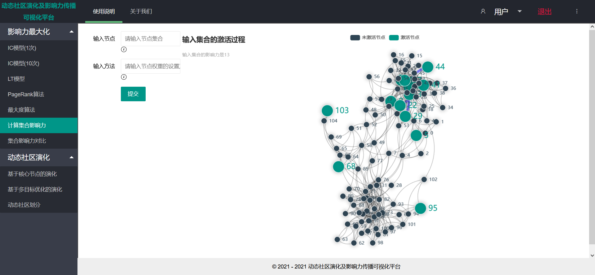
7.集合影响力对比
点击左侧导航栏中的集合影响力对比，进入该模块后页面将显示两个网络图，以及两个输入框和两个下拉选择框。在该页面输入两个节点集合，以及选择这两个节点集合所使用的算法后可得到两个集合在给定算法的情况下的影响力。
首先输入节点集合1，可以输入一个节点也可以输入多个节点，然后点击选择算法下拉框，下拉框中的内容包括IC模型（1次），IC模型（10次），LT模型，PageRank算法，最大度算法，从中选择一个作为当前输入节点集合1计算影响力的算法模型。对于节点集合2同样按照上面的操作，输入节点集合，选择算法，最后点击提交按钮。页面中的左右两个网络图将分别显示输入的两个节点集合在所选择算法的条件下影响力的传播过程，最终在这两个网络图的上方将分别显示输入节点集合的影响力大小，网络图中最终将显示输入节点集合激活成功的节点，如下图所示：
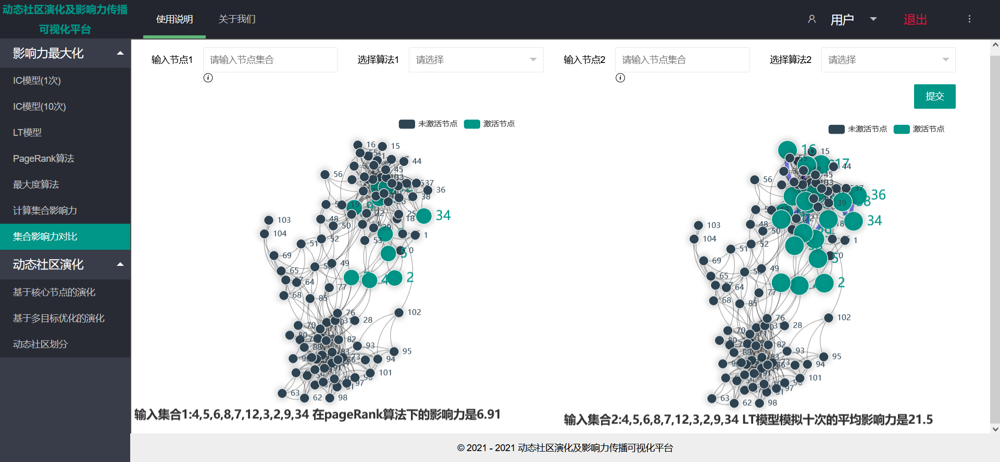
四、动态社区演化模块
点击左侧导航进入传播模型模块，该模块包括三个子模块。以下是各模块的展示：
1.基于核心节点的演化
社区发现的过程如下图所示，其中较大的节点为核心节点，在图的正上方会展示算法发现了几个社区，从图中可以看到，算法共发现了6个社区。在左上角会显示社区发现的具体过程：
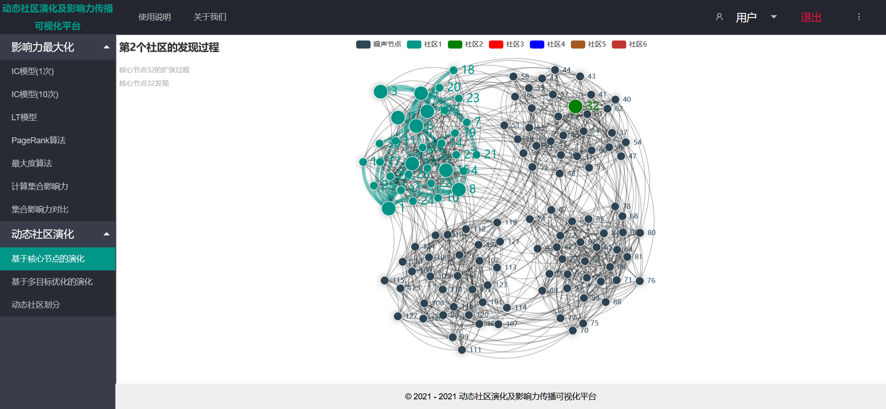
最后社区发现的结果如下图所示。其中存在一些灰色节点，这些节点属于噪声节点，没有社区归属。
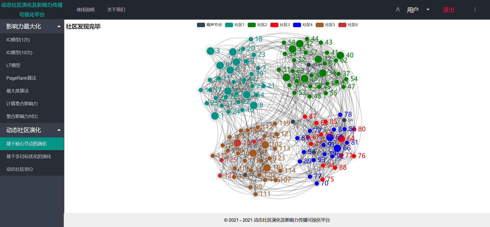
2.基于多目标优化的演化
点击左侧导航进入该模块后需等待一定时间得到演化结果，演化结果分别展示10个时间片的结果，可点击右侧十个按钮任意跳转。如下图所示：
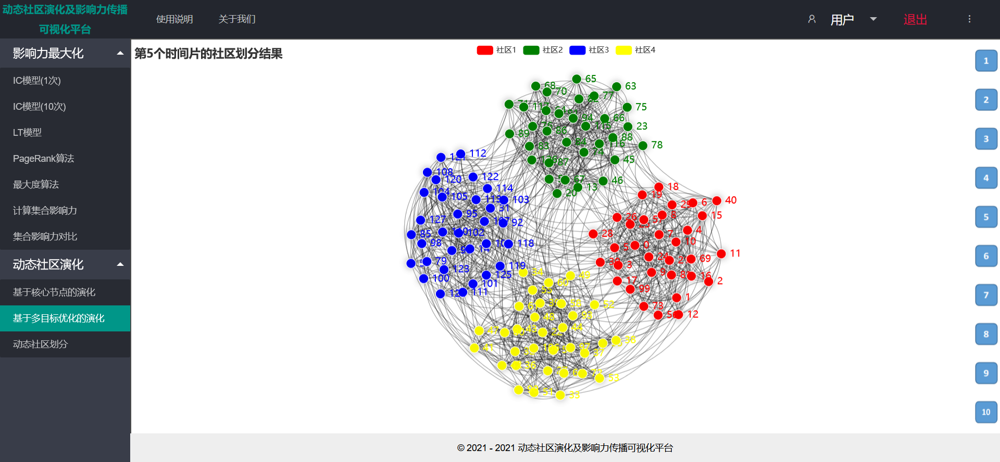
3.动态社区划分
社区发现过程如下图所示，其中节点的颜色代表社区，不同的颜色代表不同的社区，灰色代表还没有社区归属的节点。其中，左侧按钮可以控制社区演化过程的开始和停止，在停止社区演化过程后，可以对网络结构和演化速度进行控制。
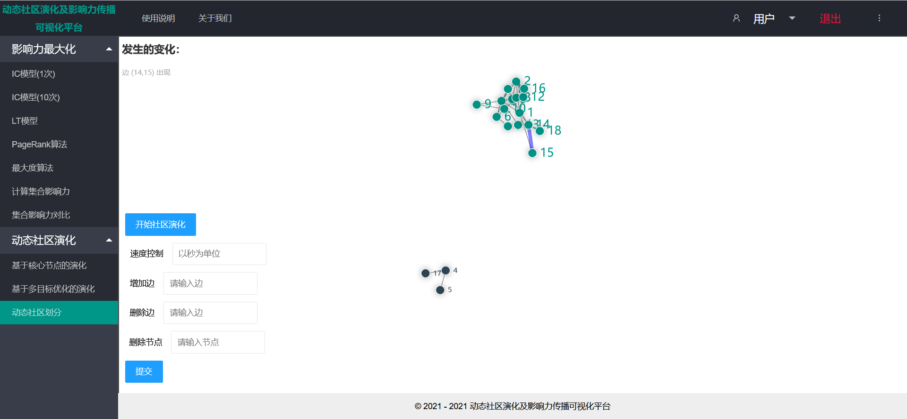
动态社区发现的结果如下图所示，在社区演化结束后用户仍然可以点击左侧的社区演化控制的按钮，对网络结构进行修改，网络会根据用户提交的修改实时的变化。
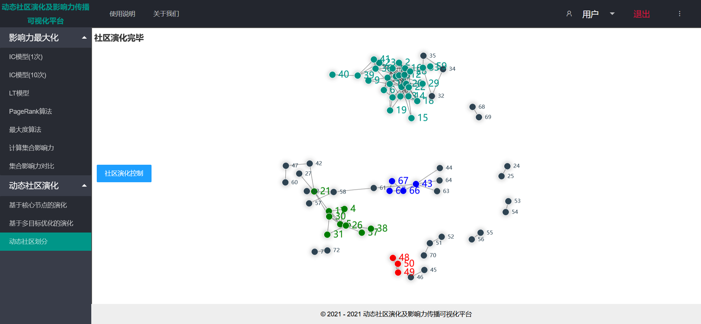